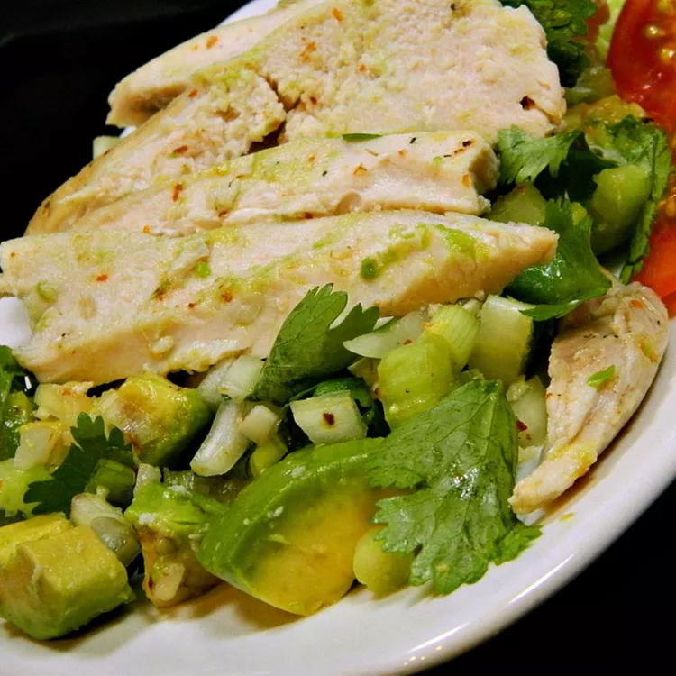

Avocado Chicken Salad

Description
Delicious avocado chicken salad. Super easy to make!
Ingredients
- 2 skinless, boneless chicken breast halves
- 1 avocado, diced
- 4 scallions, chopped
- 1 stalk celery, chopped
- ¼ sweet onion, chopped
- ½ lime, juiced
- 2 tablespoons chopped fresh cilantro
- 1 pinch cayenne pepper, or to taste (Optional)
- salt and ground black pepper to taste
Steps
- 1. Preheat oven to 375 degrees F (190 degrees C). Line a baking sheet with aluminum foil.
- 2. Place chicken breasts on prepared baking sheet.
- 3. Cook in the preheated oven until no longer pink in the middle and juices run clear, 15 to 25 minutes. An instant-read thermometer inserted into the center should read at least 165 degrees F (74 degrees C). Shred chicken breasts.
- 4. Stir chicken, avocado, scallions, celery, onion, lime juice, cilantro, cayenne pepper, salt, and black pepper together in a bowl.